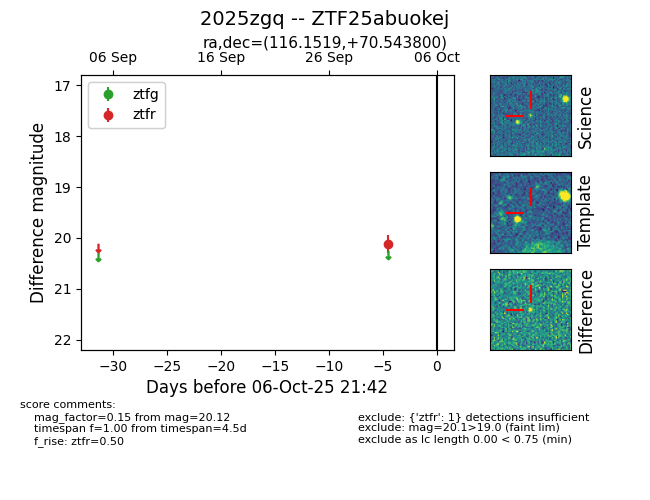

FINK: ZTF25abuokej
Lasair: ZTF25abuokej
ALeRCE: ZTF25abuokej
TNS: 2025zgq
YSE: 2025zgq
ZTF25abuokej (ztf,fink)
2025zgq (tns,yse)
equatorial (ra, dec) = (116.1519,+70.54380)
galactic (l, b) = (144.8845,+29.87464)

last ztfr=20.12
1 ztfr detections